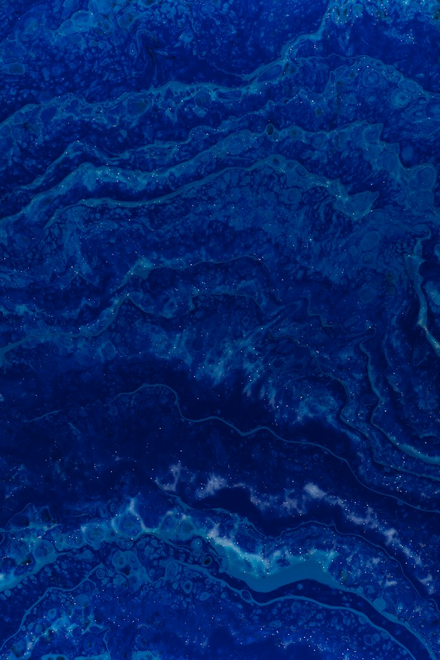
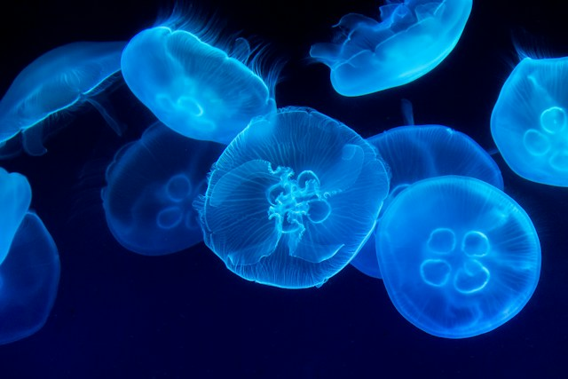
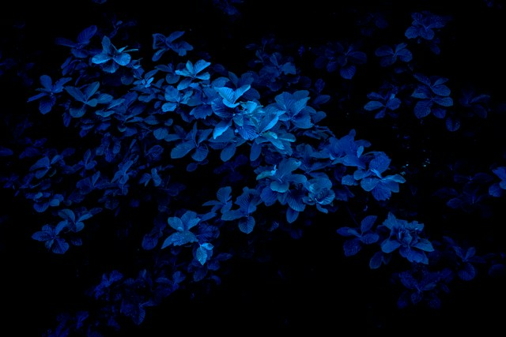

Olika objekt i färgen blå

The colour defined as blue in the RGB color model, X11 blue, is the most chromatic (colourful) blue that can be reproduced on a computer screen, and is the colour named blue in X11. It is one of the three primary colors used in the RGB colour space, along with red and green. The three additive primaries in the RGB colour system are the three colours of light chosen such as to provide the maximum gamut of colours that are capable of being represented on a computer or television set.

Blue jellyfish age can be identified by colour of their bell. They tend to be pale in appearance when young, but mature to have a brightly purple-blue (some yellow) coloured bell. Although it is similar to the lion's mane jellyfish, the blue jellyfish is not as large, and has a translucent bell.[1]

"This blue flower is the watchword and sacred symbol of the [Romantic] school," according to H.H. Boyesen. "It is meant to symbolize the deep and sacred longings of a poet's soul. Romantic poetry invariably deals with longing; not a definite, formulated desire for some obtainable object, but a dim, mysterious aspiration, a trembling unrest, a vague sense of kinship with the infinite, and a consequent dissatisfaction with every form of happiness which the world has to offer."[3] Thomas Carlyle offered this, that the blue flower "being Poetry, the real object, passion and vocation of young Heinrich, which, through manifold adventures, exertions and sufferings, he is to seek and find."[4]